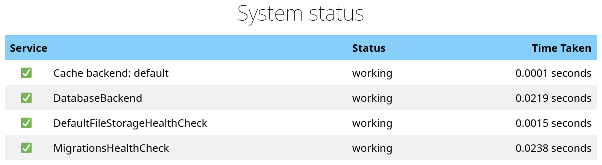
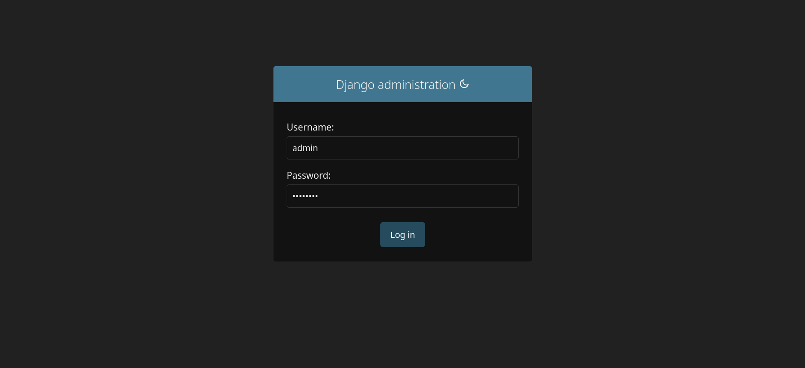
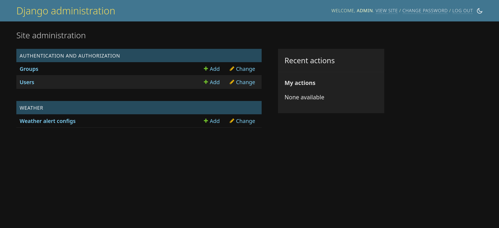

00 Prerequisites
Today we're going to be writing code in Python and versioning it in Git. To get your environment ready let's install some dependencies and check out the lab code. Here's a checklist of what we're going to do:
- Install Git
- Install Docker
- Set up lab environment
If you get stuck, ask for help!
Confirm Git installation
There's a good chance you already have Git installed. See with:
# In Terminal.app
git --version # macOS may prompt you to install command line developer tools.
# In PowerShell
git --version
If you get something along the lines of command not found, then let's install it:
- macOS - If
gitwas missing above, then macOS should have already prompted you to install command line developer tools. - Windows - Install Git from the official website. Accept the defaults. Re-open powershell after installing.
If you're running Linux, then I assume you know the right package management commands to install Git.
Install Docker
If you're not already familiar, Docker is a system that lets you easily package and deploy applications. Our demo API runs on Docker, and so does a ton of software on the web. Let's get it installed.
- macOS
- Windows - It may prompt you to install WSL (Windows Subsystem for Linux), which is fine. Restart Docker Desktop after installing WSL.
Set up lab environment
Clone repo and install dependencies
Tie the above together to get our lab environment ready.
# clone the repo and enter it
git clone https://github.com/johnjameswhitman/hackduke2023backend.git
cd hackduke2023backend
# start up docker services
# Windows users may get a prompt asking to allow Docker to accept network
# connections.
docker-compose up -d
# confirm they're up - you should hackduke_django and hackduke_docs
docker ps
# run tests
docker-compose exec --env DJANGO_SETTINGS_MODULE=config.settings hackduke_django pytest
At this point tests should all be passing. If you see a warning about The DEFAULT_FILE_STORAGE setting is deprecated it's ok to ignore.
Try out API
Now that you've gotten all of your dependencies set up, let's actually see the API in action.
You should see all  when you load the API at:
http://127.0.0.1:8000/status/.
when you load the API at:
http://127.0.0.1:8000/status/.

Create local super-user
Django comes with user-management and a permissions framework out of the box. Let's create a local super-user for your API, and make sure we can log into the admin panel.
# Create a super-user and set a password.
docker-compose exec hackduke_django python manage.py createsuperuser --email admin@example.com --username admin
Note
Since this is your development environment it's ok to use a basic password
you won't forget; however, if you do forget it you can reset it with the
command docker-compose exec hackduke_django python manage.py
changepassword admin.
Log into Django admin
Django also comes with an admin panel out of the box. Let's try it out.
Open the admin page in your browser: http://127.0.0.1:8000/admin/.

Enter the credentials for your super-user and log in. You should see the admin home screen with links to Groups and Users, as well as the Weather alert configs we'll be working with later in the workshop. You can use admin to create new users, manage permissions, and work with models.
